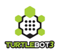
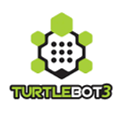

References
[1] "Global Domestic Service Robots Market Size and Trends to
2020",Kennethresearch.com,2020.[Online].Available:https://www.kennethresearch.com/report-details/domestic-service-robots
market/10085638. [Accessed: 19- Feb- 2020]
[2] T. Fong, I. Nourbakhsh and K. Dautenhahn, "A survey of
socially interactive robots", Robotics and Autonomous Systems,
vol. 42, no. 3-4, pp. 143-166, 2003. Available:
10.1016/s0921-8890(02)00372-x [Accessed 20 February 2020].
[3] P. Menzel and F. d'Aluisio, Robo Sapiens: Evolution of a new
Species. Cambridge, MA, USA: MIT Press, 2001.
[4] S. Frennert and B. Östlund, "Review: Seven Matters of Concern
of Social Robots and Older People", International Journal of
Social Robotics, vol. 6, no. 2, pp. 299-310, 2014. Available:
10.1007/s12369-013-0225-8 [Accessed 20 February 2020].
[5] S. Kleanthous et al., “Analysis of elderly users preferences
and expectations on service robots personality, appearance and
interaction,” in Proc. Int. Conf. Human Aspects IT Aged
Population, 2016, pp. 30-45.
[6] S. Schiffer, A. Ferrein and G. Lakemeyer, "Reasoning with
Qualitative Positional Information for Domestic Domains in the
Situation Calculus", Journal of Intelligent & Robotic Systems,
vol. 66, no. 1-2, pp. 273-300, 2011. Available:
10.1007/s10846-011-9606-0 [Accessed 22 February 2020].
[7] C. Jayawardena, K. Watanabe and K. Izumi, "Controlling a robot
manipulator with fuzzy voice commands using a probabilistic neural
network", Neural Computing and Applications, vol. 16, no. 2, pp.
155-166, 2006. Available: 10.1007/s00521-006-0056-8 [Accessed 20
February 2020].
[8] A. Jayasekara, K. Watanabe, K. Kiguchi and K. Izumi,
"Adaptation of robot’s perception of fuzzy linguistic information
by evaluating vocal cues for controlling a robot manipulator",
Artificial Life and Robotics, vol. 15, no. 1, pp. 5-9, 2010.
Available: 10.1007/s10015-010-0755-1 [Accessed 22 February 2020].
[9] M. A. V. J. Muthugala and A. G. B. P. Jayasekara, “Enhancing
human robot interaction by interpreting uncertain information in
navigational commands based on experience and environment,” in
Proc. IEEE Int. Conf.Robot. Autom. (ICRA), May 2016, pp.
2915_2921.
[10] M. Skubic et al., "Spatial Language for Human–Robot Dialogs",
IEEE Transactions on Systems, Man and Cybernetics, Part C
(Applications and Reviews), vol. 34, no. 2, pp. 154-167, 2004.
Available: 10.1109/tsmcc.2004.826273 [Accessed 22 February 2020].
[11] C. Jayawardena, K. Watanabe, and K. Izumi, “Learning of
object identification by robots commanded by natural language,''
in Proc. IAS, 2006, pp. 913_920.
[12] M. A. V. J. Muthugala and A. G. B. P. Jayasekara,
“Synthesizing fuzzy linguistic vocal responses by adapting
perception of robot based on visual attention,” in Proc. 7th Int.
Conf. Inf. Autom. Sustainability, Dec. 2014, pp. 16.
[13] A. Olivares-Alarcos et al., "A review and comparison of
ontology-based approaches to robot autonomy", The Knowledge
Engineering Review, vol. 34, 2019. Available:
10.1017/s0269888919000237.
[14] R. Mendoza and M. Williams, “Ontology based object
categorisation for robots,” in Proc. Conf. Res. Practice Inf.
Technol. Ser., 2005, vol. 58, pp. 65–80.
[15] Y. C. Go and J. Sohn, “Context modeling for intelligent robot
services using rule and ontology,” in Proc. 7th ICACT, 2005, vol.
2, pp. 813–816.
[16] Loncomilla, P., Ruiz-del-Solar, J. and Martínez, L., 2016.
Object recognition using local invariant features for robotic
applications: A survey. Pattern Recognition, 60, pp.499-514.
[17] R. Kumar, S. Lal, S. Kumar and P. Chand, "Object Detection
and Recognition for a Pick and Place Robot", IEEE Asia-Pacific
World Congress on Computer Science and Engineering 2014, At
Plantation Island, Fiji, 2015. [Accessed 27 July 2020].
[18] T. P. Cabre, M. T. Cairol, D. F. Calafell, M. T. Ribes, and
J. P. Roca,"Project-Based Learning Example: Controlling an
Educational Robotic Arm with Computer Vision," Tecnologias del
Aprendizaje, IEEE Revista Iberoamericana de, vol. 8, pp. 135-142,
2013.
[19] Corcho, O., Garc´ıa-Castro, R.: Five challenges for the
semantic sensor web. SemanticWeb (2010).


 
